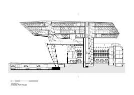

œuvres
Antwerp Port House à Anvers, Belgique

Extérieur de l’Antwerp Port House à Anvers, Belgique


Intérieur de l’Antwerp Port House à Anvers, Belgique
Extérieur de l’Antwerp Port House à Anvers, Belgique

Croquis de l’Antwerp Port House à Anvers, Belgique par Zaha HADID
Pour découvrir d’avantage d’œuvres , cliquez ici !